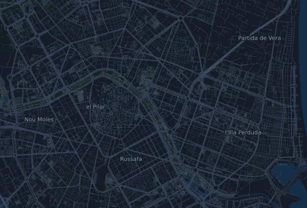

Maratón Valencia Trinidad Alfonso Zurich 42,2 km
- Distancia
- 42,2 km
- Desnivel positivo
- ↑ 249 m
- Punto más alto
- 32 m s. n. m.
- Superficie
- Asfalto
- Perfil
- Llano
- Salida
- 08:15 h
Perfil de altitud
Prepárate con Mila
Mila es un coach de running en una app. Si añades una carrera a tu plan, el coach planifica tus semanas hasta la salida según tu forma y te da un pronóstico de tiempo y un plan de ritmo, hidratación y energía para el recorrido.

La sesión justa. El día justo.
El recorrido

Sobre el recorrido
Maratón Valencia Trinidad Alfonso Zurich es una carrera en ruta de 42,2 km (Valencia, España). El recorrido acumula 249 m de desnivel positivo y 253 m de desnivel negativo, 5,9 m por km, así que es llano. El punto más alto está a 32 m sobre el nivel del mar y el más bajo a 1 m.
El recorrido no tiene subidas continuas de 25 m o más.
Hay 2 tiempos de corte a lo largo del recorrido.
En la app Mila, el coach describe el recorrido en detalle en tu idioma y planifica tu ritmo y tu avituallamiento.
Inscripción y dorsal
Recogida de dorsales
- Viernes, 4 de diciembre de 2026, de 09:00 a 21:00 h
- Sábado, 5 de diciembre de 2026, de 09:00 a 19:00 h
Expo 42K Feria Valencia, Av. de les Fires, s/n, 46035 València
Fuente: valenciaciudaddelrunning.com, consultado el 30 de octubre de 2026
Antes de la salida
Horas de salida
- Sub 2h50:00: 08:15 h
- 2h50:00–2h59:59: 08:25 h
- 3h00:00–3h11:59: 08:35 h
- 3h12:00–3h19:59: 08:45 h
- 3h20:00–3h31:59: 08:55 h
- 3h32:00–3h42:59: 09:05 h
- 3h43:00–3h55:59: 09:15 h
- 3h56:00–4h09:59: 09:25 h
- Over 4h10:00: 09:35 h
Lugar de salida
Plaça de la Marató
Tiempos de corte
| En | Como muy tarde |
|---|---|
| km 25,0 | 12:57 h |
| km 42,2 | 15:15 h |
Fuente: valenciaciudaddelrunning.com, consultado el 28 de octubre de 2026
Tabla de ritmos
Maratón Valencia Trinidad Alfonso Zurich 42,2 km en 3:00:00 – ritmo por km y tiempos de paso
4:16 min/km · km 10: 42:41 · km 21,1: 1:30:04 · km 30: 2:08:03 · km 40: 2:50:44 · meta: 3:00:00
Maratón Valencia Trinidad Alfonso Zurich 42,2 km en 3:30:00 – ritmo por km y tiempos de paso
4:59 min/km · km 10: 49:48 · km 21,1: 1:45:04 · km 30: 2:29:24 · km 40: 3:19:12 · meta: 3:30:00
Maratón Valencia Trinidad Alfonso Zurich 42,2 km en 4:00:00 – ritmo por km y tiempos de paso
5:41 min/km · km 10: 56:55 · km 21,1: 2:00:05 · km 30: 2:50:44 · km 40: 3:47:39 · meta: 4:00:00
Maratón Valencia Trinidad Alfonso Zurich 42,2 km en 4:30:00 – ritmo por km y tiempos de paso
6:24 min/km · km 10: 1:04:02 · km 21,1: 2:15:06 · km 30: 3:12:05 · km 40: 4:16:06 · meta: 4:30:00
Los tiempos suponen un ritmo constante de principio a fin. Es pura aritmética, no un pronóstico: en las subidas, entre la gente y en los avituallamientos el ritmo varía.
Preguntas frecuentes
¿Cuándo es Maratón Valencia Trinidad Alfonso Zurich 42,2 km?
Maratón Valencia Trinidad Alfonso Zurich 42,2 km se celebra el domingo, 6 de diciembre de 2026. Comprueba la fecha y la hora de salida con el organizador.
¿A qué hora sale Maratón Valencia Trinidad Alfonso Zurich 42,2 km?
Según el organizador: Sub 2h50:00: 08:15 h, 2h50:00–2h59:59: 08:25 h, 3h00:00–3h11:59: 08:35 h, 3h12:00–3h19:59: 08:45 h, 3h20:00–3h31:59: 08:55 h, 3h32:00–3h42:59: 09:05 h, 3h43:00–3h55:59: 09:15 h, 3h56:00–4h09:59: 09:25 h, Over 4h10:00: 09:35 h.
¿Cuánto mide Maratón Valencia Trinidad Alfonso Zurich 42,2 km y cuánto desnivel tiene?
La carrera tiene 42,2 km, con 249 m de desnivel positivo y 253 m de desnivel negativo. El punto más alto está a 32 m sobre el nivel del mar.
¿Cómo es el recorrido de Maratón Valencia Trinidad Alfonso Zurich 42,2 km?
El recorrido es llano, con 5,9 m de desnivel por km de media. No tiene subidas continuas de 25 m o más. La salida y la meta están en el mismo lugar. Se corre sobre asfalto.
¿Hay tiempos de corte en Maratón Valencia Trinidad Alfonso Zurich 42,2 km?
Sí, según el organizador: km 25,0: 12:57 h; km 42,2: 15:15 h.
¿Cómo reparto el ritmo en Maratón Valencia Trinidad Alfonso Zurich 42,2 km?
Busca un esfuerzo constante de principio a fin y contente en los primeros kilómetros, cuando las piernas van frescas y el pelotón sale rápido. El recorrido es llano, así que un ritmo constante por kilómetro funciona bien. En Mila tienes un plan de ritmo para este recorrido, según tu propia forma.
Más carreras como esta
Más carreras cerca
- XXII Cross Internacional de Atapuerca – Absoluto hombres (7,837 km)22 de noviembre de 2026 · Atapuerca, España
- Nationale-Nederlanden San Silvestre Vallecana (carrera popular 10 km)31 de diciembre de 2026 · Madrid, España
- Behobia – San Sebastián 20,2 km8 de noviembre de 2026 · Behobia, España
- Hyundai Mitja Marató Barcelona by Brooks 21 km14 de febrero de 2027 · Barcelona, España
- Zurich Maratón de Sevilla 42,2 km21 de febrero de 2027 · Sevilla, España
- Transgrancanaria Classic 125 km26 de febrero de 2027 · Las Palmas de Gran Canaria, España
Prepárate con Mila
La sesión justa. El día justo.
Los datos proceden del archivo del recorrido y de la información del organizador. Comprueba la fecha, las horas de salida y el reglamento con el organizador.
Mila no está vinculada al organizador ni a los patrocinadores de la carrera, ni está patrocinada o avalada por ellos. Los nombres y las marcas pertenecen a sus propietarios. ¿Organizador o titular de derechos? Solicitar un cambio o la retirada